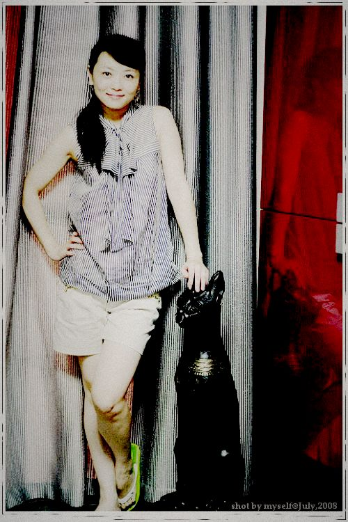

心的感冒 @ Jul 24, 2008
？：测试结果是中度。
！：那就不要忧郁。
？：又不是在饭桌上点菜。
！：我的心就不会感冒。
？：想象我死后电视台采访你，你会怎么说？
！：你最大的兴趣就是你自己。
忧郁症(hypochondria;hypochondrium)，也被称为「心的感冒」，近年来，在高压力社会中，几乎已成为最流行的精神文明病，世界卫生组织等的研究表明，平均每一百人中就有三人患有忧郁症，其中因为忧郁症所带来的身体疾病，甚至自我毁灭的例子更是比比皆是。
？：测试结果是中度。
！：那就不要忧郁。
？：又不是在饭桌上点菜。
！：我的心就不会感冒。
？：想象我死后电视台采访你，你会怎么说？
！：你最大的兴趣就是你自己。
忧郁症(hypochondria;hypochondrium)，也被称为「心的感冒」，近年来，在高压力社会中，几乎已成为最流行的精神文明病，世界卫生组织等的研究表明，平均每一百人中就有三人患有忧郁症，其中因为忧郁症所带来的身体疾病，甚至自我毁灭的例子更是比比皆是。
去休产假的好友家一起吃晚饭。
她，白皙丰润，比怀孕时滋润许多。
她的小公主，皮肤过敏，小手不停挠自己的脑袋，大人们给她戴上手套。
摸样越来越象爸爸的公主。
令人琢磨不透的生理。
女人平时的忧郁在雌性激素积累阶段，一旦“老朋友”来过，忧郁也就消失了；
而生育后的女人在雌性激素迅速减少之后，却往往因为一点小事而烦恼。
恋爱、结婚生子，抚育孩子长大成人...
岁月推着女人往前走，女人就这么度过了一生？
“真希望人生可以闪亮一次，哪怕就一次。”
“‘闪亮’的定义是什么？”我问。
从她家出来，夏天似乎要静止了，让人感到快乐。
聊天，既单纯又并不那么重要，就象刚刚逝去的、多余的时间一样不能给予人们任何东西，只在沉静舒缓中成为你唇边回味无穷得微笑。
朋友问周末是否愿意一起去黄山？
大热天去黄山实在难以接受，连院子里的野猫都很少见它们出来活动了，只是别人家的大白狗每天早晨依然叫得欢畅。
暑气正旺，还是呆在家里比较好。
周末可以用来看电影，烧饭和收拾凌乱的衣物。
最近还特别想看书。
自己动手，家才是家，不是吗？
这城市里自己动手做家务的女人还多吗？
尤其是职业女性。
有时候，女人对女人的期望，比男人对女人的期望还要高。
由钟点工打理的家，即使窗明几净，却仍然有疏离感。
早晨。
起床。
未洗漱。
坐到电脑前。
习惯的先到俺的茶上看看，看看俺喜欢的那些页子，喝着午夜后泡的铁观音（因为是凉的），之后把上周五在公司来不及完成的工作做完~
周末。
未出门。
做了许多菜，也为工作日的晚餐准备。
还是不适应柴米油盐的生活方式，周末一部电影都没看，全泡在电脑和厨房上了。
没有父母在家务琐事上帮忙，自己就会忙成这个残样。
人生不过是反反复复走前辈的老路罢了。
别人的精彩只是你看到的部分。
那么。
说服自己。
努力适应吧。
晚上煎了两个油炸馒头片，弄了两个菜，被油炸馒头腻住了。
看了会儿电视，接到醉了几分的女友的电话，仍然是哭。
感性的女人醉了是不是大多都爱哭呢？
她问我女人要什么？
女人，要什么？
也许连女人自己都不清楚。
“要爱。”我说。
女人把每一次爱情都当作最后一次去爱，那将是怎样的情形？
我很佩服那种四处放电，分摊给身边每个男人一点点“爱”情的女人。她们从不会伤了自己，还能平衡各种关系。她们希望爱慕她们的男人越多越好。保持暧昧才能自由进出各种关系，友谊还是爱情就看她们的心情。而把每一次爱情当作最后一次去爱的女人似乎显得愚蠢了。
我已描绘不出“爱”这种东西的形状、颜色和气味。在丧失部分表达欲望之后。
爱，无时无刻都存在着，是女人一生的追求。
大多数男人都会以自己的方式去爱着女人，而不是以对方需要的方式去爱。男人以他们自己认为的快乐为快乐，他觉得自己快乐，他爱的女人也应该快乐。这种长期相处方式下的女人才是最最寂寞孤单。
这让我想起前天晚上看Anne Hathaway主演的电影《HAVOC》，印象最深的一句台词是：其实你很寂寞。
故事叙述一个富裕家庭的少女到东区贫民窟去找刺激，遇上贩毒团伙.....就这么个故事。深层次上告诉家长们要常常陪伴未成年人，不仅仅是在物质生活上给予满足。更深层次也可理解为无论少女还是妇人，男人还是女人，都需要陪伴，需要真正了解并体会她的情绪和内心需要。可是人们几乎都是本位思考，极少数人会从对方的角度去看问题，那么也无从感受到对方真正的心理需要。人们总是想方设法地去打探对方，从身体到心理到隐私...各方面，但是，我们很少会去关注对方真正的需要。
所以...女人哭吧哭吧，不是醉。
原文来自"农妇的自然生活"
翻译了Tiziano Terzani的《LA FINE è IL MIO INIZIO》中的部分章节，为好奇的同学起抛砖引玉之用。
……
另一个在我们长大成熟的过程中很根本的问题，就象以某种方式发生在我身上的，是我们同欲望的关系。欲望是我们巨大的动力。如果哥伦布没有要找到通往印度群岛新航线的欲望，他不会发现美洲。人类所有的进步，如果你想这样定义的话，或者衰退，所有的文明开化或者退化都来自欲望。各种类型的欲望，从最简单的开始，肉欲，那种想要拥有他人肉体的欲望。
欲望是种动力，我不否认。欲望是很重要的，而且决定了人类的历史。但如果你开始仔细观察，这些我们永远无法摆脱的欲望到底是什么？
尤其是今天，这个社会怂恿我们不断萌生并选择那些最荒唐的，最物质的欲望，换句话说那些大排档式的欲望。如此这般的选择是无用的，荒唐的，卑微的。真正的欲望，如果我们非要有一个的话，应该是做回自我。一个人渴求的唯一一件事应该是不做选择，因为真正的选择不是在两种牙膏，两个女人或是两辆汽车中进行的。
真正的选择是拥有自我。如果你习惯了或者保持练习，如果你不断反省，反省！你会明白那些欲望是种奴役。你的欲望越多，束缚就越多。渴求某种东西到了茶不思饭不想的地步，你就成了欲望的奴隶。
那么你在更成熟，年岁再大一些的时候会明白这些…
笑。
…你会觉得自己的那些欲望，包括那些曾经苦苦追求过的欲望是那么的好笑，那些欲望一钱不值，和生命里其他的东西一样短暂，如昙花一现。这样你开始学习摆脱欲望，尝试从里面解脱出来。包括人生最后一个欲望，每个人都会有的：长命百岁。有人说：“好吧，我不要钱，不要名，什么东西都不买了，但至少我想要一枚药丸让我再活十年！”
连这个欲望我都没有了，的确是没了。
我是幸运的。因为在喜玛拉雅山上那个小房子里的寂寞年月，让我明白了我是无欲无求的。我只要一点水喝，而水就在那里，在那个动物们都去饮用的泉眼里。只要吃一点米饭和一点火烤的蔬菜。还需要什么呢？绝对不是去电影院看最新出场的大片。与我何干呢？！会改变我的生活吗？在这个时刻，我没有别的愿望，没有。因为当下摆在我面前的也许是我有生以来碰到的最奇特，最古怪，面目全新的一件事了。
正是如此我才说我不想再在这世上停留，因为这一轮人生再激不起我的好奇心。我已经里里外外看了个通透，它的每个边角我都经历过了，而且对那些应该能煽动我的欲望都失去了兴趣。那么死亡就真正变成了…
笑。
...唯一一件崭新的事情，因为我还从来没有见识过，从来没有体验过。我只见过别人的死亡。（Tiziano Terzani）
如果来得及晚上睡觉前会看一部电影，渐渐习惯了12点睡觉7：30起床的作息时间。
昨晚看的是《Funny Games》，老片新拍，女主角是出演《金刚》的Naomi Watts，导演是Michael Haneke。

围绕着一片湖水是许多有钱人郊外的度假别墅。
Georg一家三口来到郊区湖边的房子里度假。
两位白衣年轻男孩Paul和Peter，戴着白手套，彬彬有礼，连说话的方式也是那么斯文。那两张男孩的脸至今想起来仍然耿耿于怀、不寒而栗！温文而雅、彬彬有礼，象是家境富裕的孩子，有着良好的教育，礼貌的走进陌生人的房子......
Paul和Peter犹如做游戏一样杀害了Georg一家三口。象是阅读一本书、看一场电影、打电玩一般轻松自然，充满乐趣。所谓的Funny Games自然是他们二人的“Funny Games”。
是Georg三口之家最后的假期。
Paul绘声绘色的向受害人一家陈述Peter凄惨的身世，正如大部分影片一样把恶魔的变态行径归咎于童年不幸了事。还有小船上匕首的设计。影片之前专门给了它一个特写，我本以为这把匕首可以帮助Georg一家脱离险境，电影恰恰没有按照传统模式进行而是反其道行之：Paul有着良好的家庭，最后的希望“匕首”也轻描淡写地被丢到了湖里。正义没有战胜邪恶，好人没有打败坏人，影片导演Haneke强行灌输给你的，可这个“强行”却到了霸道、完全不讲人性的地步，这是一部具有强迫症的电影，令人感到不适。
让人心有余悸的是我们该如何防备现实生活中正常面孔下心理扭曲的人？
尤其是所谓的“精英”中恰恰变态的不在少数，夸夸其谈着真理、真爱、正义，实则象Paul和Peter一样离经叛道、道德沦丧，精神分裂的一种。
中国和日本都是著名的“茶国”，怎样表达它们茶文化的区别？谭盾归结为一句话“茶令日本人的生活更加艺术化，令中国人的艺术更加生活化”。
由谭盾作曲的歌剧《茶》将于7月30日在国家大剧院首演。谭盾称，《茶》的配乐运用了很多自然声响，他创作的水乐、纸乐、陶乐，以及水琴、陶鼓、纸鼓等乐器都将令观众耳目一新。为让中国版《茶》走向世界，演员们将用英文演唱。住在北京的人们有耳福啦~
不过谭盾也说，他以前虽然喜欢喝茶，但其实不会喝，直到后来创作歌剧《茶》时，才对茶有了更多了解、认识和感悟，喝茶的观念发生了转变，才知道了喝茶的真正意味。谭盾说，歌剧《茶》是借唐代的关于茶的故事来说茶道、说男女、说生死、说未来。看来谭盾念的“茶经”，已不止是关乎茶或茶道，更是借茶抒怀言事传情说爱了。
晚上在新世纪广场的雍福会吃公务餐，一桌十来个人。
这种场合不知是亲近还是疏离的，亦或是处于边缘。
尽量躲避这种饭局，怕掠起人性尘埃，只有工作是相联的。
吃饭少不了说话，平时大多数时候我们都在说废话。 不说废话的有三种：一种是性格决定的；一种是处心积虑；另一种轮回，反朴归真了。我自讨厌话多的，以前我也话多，不说话怕冷场，不说话怕怠慢了自己，不说话显得自己寡薄，如今却渐渐少了大半，常常一片空白，少去的大半想来也是废话吧。
住“乡下”久了，眷恋清净、安静。可时不时仍涉足于这些那些的寒暄应酬、非己愿的明争暗斗，象是荷尔蒙与功名利益的旁观者，你真能与世隔绝，一了百了？人，大多逃脱不了功名的诱惑，尤其是男人。然，那颗心究竟可以安放在怎样的心态上顺畅呼吸？
得一朋友推荐看《天道》，精彩到人家夫妻二人可以从傍晚看至凌晨4点睡下，周末半天看过几集，说左小青的感觉和我很象，没发现。倒是王志文的台词说得跟哲人一般耐人寻味，不同于世俗的世界观价值观。（享受的台词还有《大明宫词》）看到男女主人公即将恋爱便止住不再观看，悲戚自不必说，怕累了眼睛。如丁元英经历大风大浪，荣辱不惊的周遭有几人？得利者沾沾自喜，得运者夸夸其谈，我们围绕的不过是个“利”字。其实，不过是平凡女子，谋生，亦谋爱。各有各的命运，各有各的成全，人，终究要独自承担自己。是的，象棉棉说的那样，将垃圾吃下去，变成糖，生活就可以更美好。
6月病了一场，越发的瘦了。
周末伴着几许雷电，轰鸣不绝于耳，雨哗哗地下过不一会儿又是燥热。
雨天，隔着玻璃看窗外的世界，如在家外...冷眼旁观周遭。
人生能几？
一别如斯，落尽梨花月又西。
